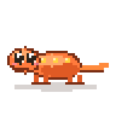

Hold a key.
Talk.
It’s typed.
Yap drops clean text at your cursor in any app on your Mac. Speech recognition runs on the machine in front of you by default, and Yappy keeps you company in one small pill while it works.
- Speech
- On-device speech recognition
- Runs on
- Your Mac, by default
- Cloud
- Your own cloud account, only if you add a key
- Network
- Model downloads, update check, license activation
- Account
- None
- Telemetry
- None
- Requires
- macOS 13+, Apple Silicon
- Trial
- 14 days, no card
- Price
- $29 once · 3 Macs · yours forever

One pill over every app
Yap lives in one small pill that floats over whatever you are working in. Yappy sits at his typewriter inside it. Click the pill or hold your key to dictate. When a meeting is recording, its clock runs inside the same pill, next to Yappy.
- Click to start and click to stop, or hold and let go.
- Drag it to the bottom or to either side of the screen.
- One pill at all times: no second window to chase during a call.

Yappy and the crew
Yap is a small studio behind your screen. Everything you say comes in through the front door and Yappy types it up. Nobody here is a mascot doing tricks; each one has a job.
Yappy
The scribe and the heart of the place. He is a little over-eager, types faster than he thinks, and is always first at the typewriter when you press fn.

Sal
Lives in the back room and keeps the engine warm. Every launch starts with Sal lighting the furnace; the engine is ready when the fire is.
Mochi
Hangs on the studio door. When you are presenting or sharing your screen, Mochi is the reason the whole crew goes silent. Mochi never speaks, anywhere.
Cinder
Co-anchors Yappy News with Yappy.
Dictate anywhere you can type
Editor, terminal, browser, chat: if there is a text field, Yap can fill it. Hold fn, any key you pick, or a mouse button, talk, and let go. The text lands at your cursor, in the app you dictated into.
- Prefer hands-free? Tap once to start and tap again to stop.
- Yap waits for a pause before it pastes, so it never types over you.
- If an app will not take a paste, a Copy card holds the text so nothing is lost.

Cleanup you can see
Fillers like “um” are dropped, and when you say “scratch that” or “wait, no”, Yap keeps the version you meant. When a take is polished, the pill says so, and Reveal edit shows exactly what changed.
- Each app keeps its own style: a chat stays casual, an email stays formal.
- Use original swaps the polished text for your words exactly as you said them.

Meetings, with notes and names
When a call starts in Zoom, FaceTime or a browser call, the pill offers to record it, with a consent line you can read out. It offers once, and it never starts or stops on its own.
- Both sides of the call are recorded (your side only on FaceTime).
- After the call, Yap asks “who was this?” so every speaker gets a name.
- Voices you name are remembered on this Mac, so the next call labels them for you.

Yappy News
Pick what you care about when you set Yap up, and Yappy and Cinder brief you on Home. Stories are ranked, de-duplicated and cached on your Mac.
- Off until you switch it on; change your interests in Settings at any time.

Your words, spelled right
Add the names, brands and jargon you use, and Yap spells them right in dictation and in meetings. Correct a transcript once and the dictionary keeps the correction.

Scratchpad
A place to park text before it goes anywhere. Open the Scratchpad over whatever app you are in, dictate into a note, and keep as many saved notes as you like. A note started from the pill opens straight to itself.

Insights
Your history, turned into plain numbers: words per day over the last month, a year of activity, the apps you dictate into most, the people you meet with most, and how long you usually wait for text. All of it is counted on your Mac.

It works on a plane
That is the shortest proof we have. Switch off the Wi-Fi at 35,000 feet and Yap keeps transcribing, because speech recognition runs on your Mac by default. Your own cloud account is optional, and Yap only uses it if you add a key.

The complete list of network calls Yap makes: model downloads when a feature first needs them, an update check you can switch off in Settings, and your license — one call to drivia.consulting when you activate it, a token refresh about once a month, and one call if you remove it from a Mac. Your own cloud account, if you add a key, and Yappy News, if you switch it on, are the only others. That is the whole list. Read the privacy policy →
$29. Yours forever.
One payment, no subscription, no account, no renewal date. Try the whole app for fourteen days first and buy it only if you keep reaching for it.
$29once
- Yours
- Forever — no renewal, no expiry
- Macs
- Three
- Updates
- Every future version, included
- Refund
- 14 days, no questions
14-day free trial — no card to start. Download it, use all of it for two weeks, and nothing asks you for a payment method until you decide.
When the trial ends, only new dictation stops. Your history, your search, your exports, your dictionary, your snippets and your settings keep working forever. The words you already spoke stay yours whether or not you ever buy a license. Read the terms →
Get Yap
Signed and notarized by Apple. About a minute from download to your first dictation, and fourteen days before it asks you for anything.
Yap is live and still being built. Updates arrive inside the app, and they wait until you are not talking.